🔍 EDA — Evaluación Exploratoria de Datos
Cooperativas de Café y Cacao frente al EUDR (Reglamento de Deforestación de la UE)
Proyecto: eudrperu · 3 archivos · 673 + 6 + 25 organizaciones
📁 Archivo 1: Directorio PAC Café 2018–2025
📁 Archivo 2: Directorio Mango/Banano
📁 Archivo 3: Perfil EUDR San Martín
🗓️ Sep 2026
Panorámica General
Organizaciones PAC (A1)
673
25 departamentos · 8 años
Productores en San Martín (A3)
7,580
5,590 H + 1,990 M en 25 coop.
Exportaciones FOB 2025 (A3)
$33.9M
13 de 25 cooperativas
Certificación Orgánica (A3)
96%
24 de 25 cooperativas
Avance EUDR promedio (A3)
0.79 / 1
17 de 25 registran dato
Hectáreas en San Martín (A3)
21,235
Superficie total de las 25 coop.
Archivo 1 — Directorio PAC Café (673 organizaciones)
Departamentos con más organizaciones PAC
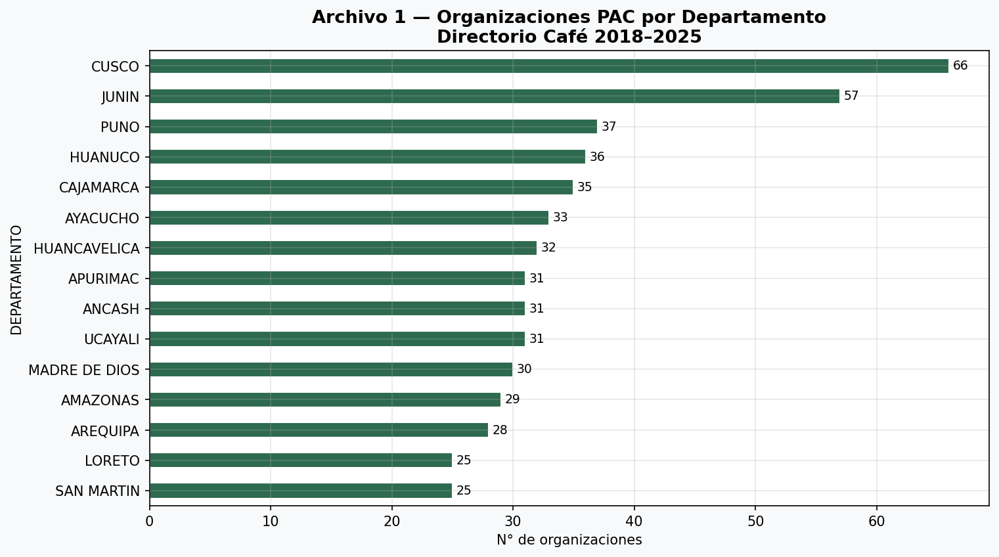
Cusco y Junín lideran en cobertura PAC
Tipos de organización
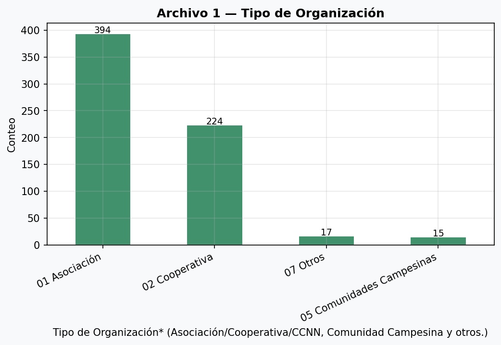
Asociaciones son el tipo predominante (59%)
Productos principales en el directorio PAC
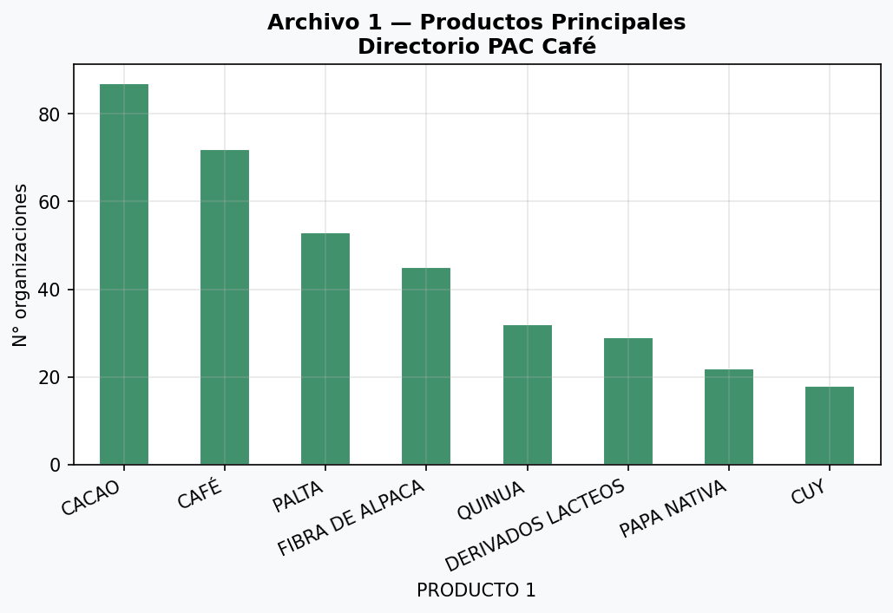
Cacao, Café y Palta son los tres productos con mayor representación en el directorio
Ventas totales por año (S/) — 2018 a 2025
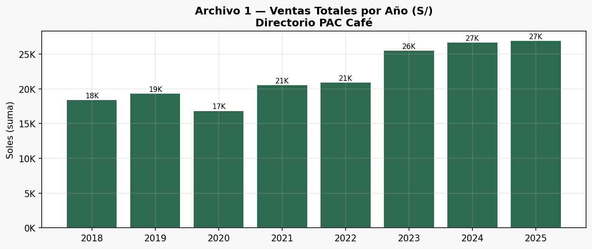
Ventas en soles de las organizaciones PAC. Aclaración: los valores numéricos en el directorio original aparecen en la misma escala que los beneficiarios, lo que sugiere que las columnas de ventas pueden estar confundidas con las de beneficiarios en la estructura original del Excel. Se requiere auditoría de las fórmulas originales.
⚠️ Alerta de calidad A1: Las columnas de "VENTAS TOTALES" en el directorio PAC café muestran valores numéricos idênticos a las columnas de "BENEFICIARIOS" en todos los años. Esto ocurre porque la estructura del Excel tiene celdas combinadas (merged cells) en la fila de encabezado, lo que causa que pandas lea la columna equivocada. Se recomienda que el equipo de datos reexporte el Excel asegurándose de que las columnas de ventas estén correctamente etiquetadas.
Heatmap — Departamentos × Productos principales
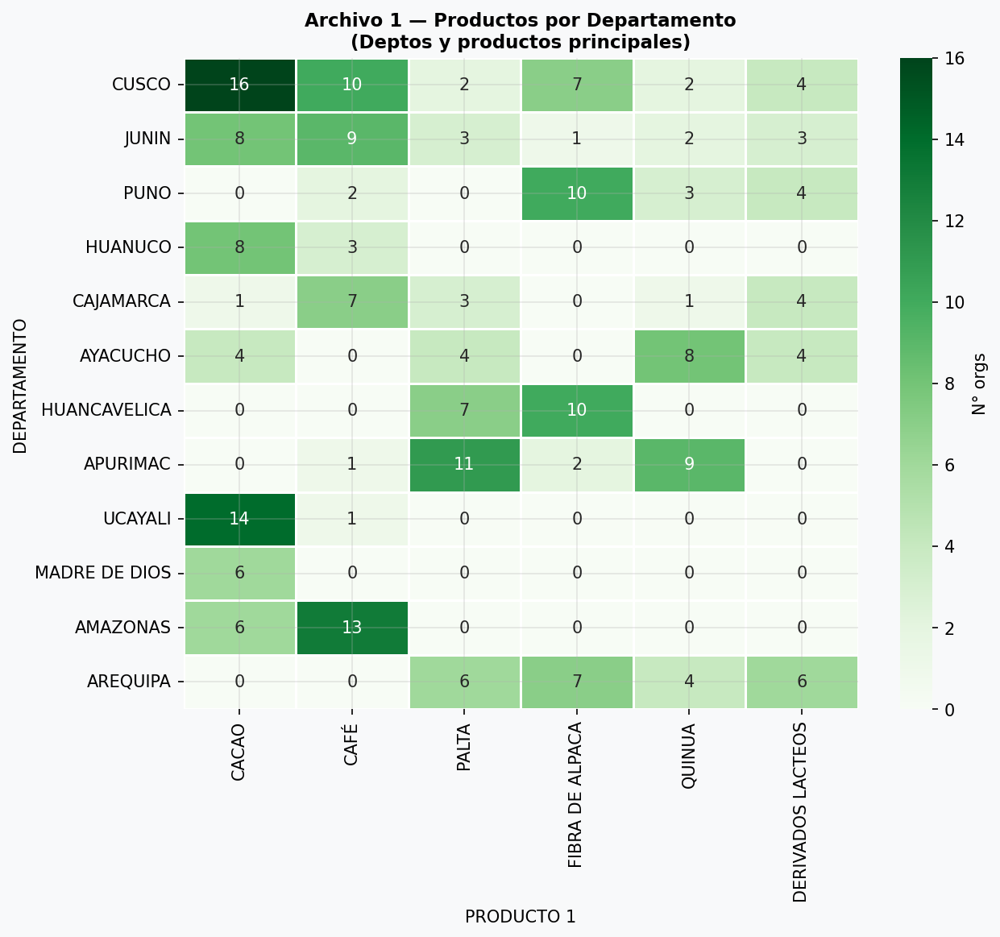
Intensidad de organizaciones por departamento y producto
Archivo 3 — Perfil Cooperativas Café San Martín (25 organizaciones)
Socios totales
7,580
5,590 H + 1,990 M
Hectáreas
21,235
Promedio 849 ha/org
Volumen cosecha 2026
136,505 qq
10 orgs con dato
FOB 2025
$33.9M
13 orgs exportadoras
Certif. Orgánica
96%
24 de 25 coop.
Certif. Fair Trade
96%
24 de 25 coop.
Avance EUDR
0.79 / 1
17 orgs con dato
Provincias
12
La Conv., Moyobamba
Distribución de socios varones y mujeres
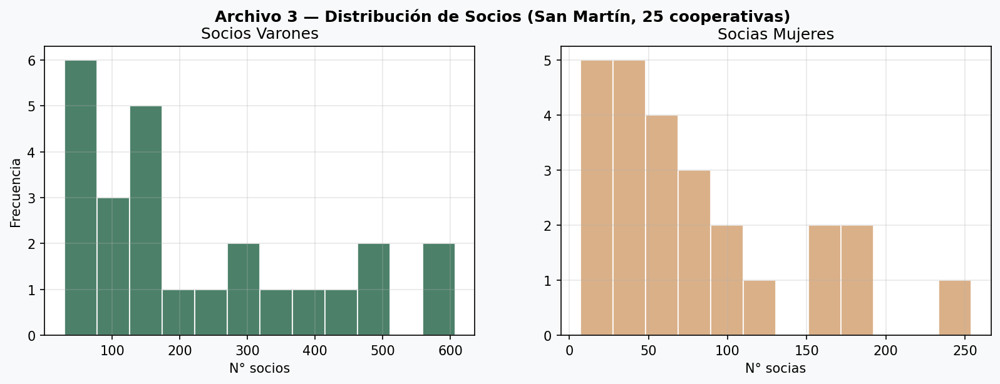
Sesgo hacia organizaciones con menor número de socios (mediana: 141 varones, 66 mujeres)
Hectáreas vs Volumen de producción
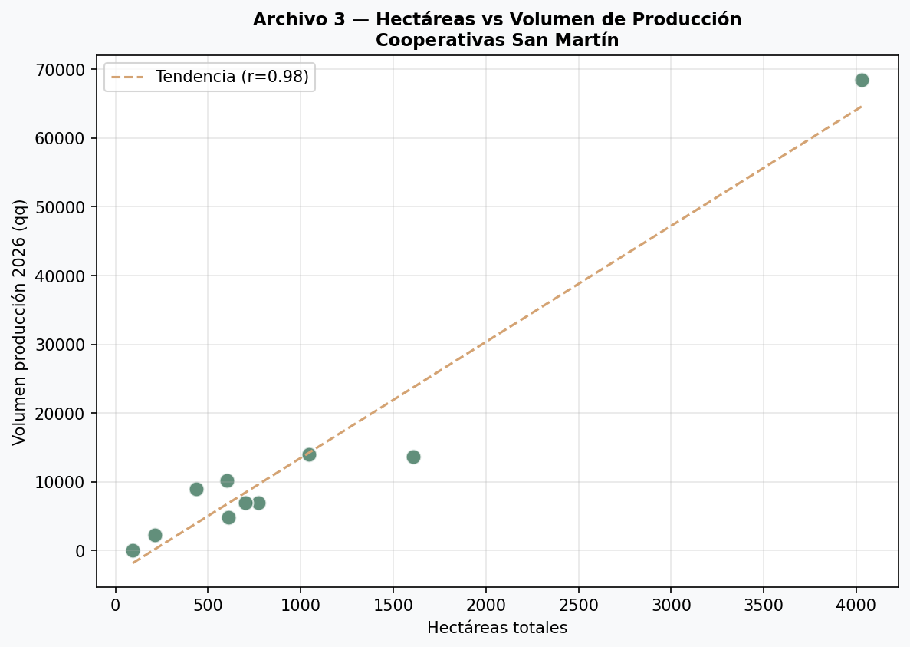
Relación superficie-producción. Orgss. con mayor eficiencia relative visible a la derecha.
Certificaciones vigentes
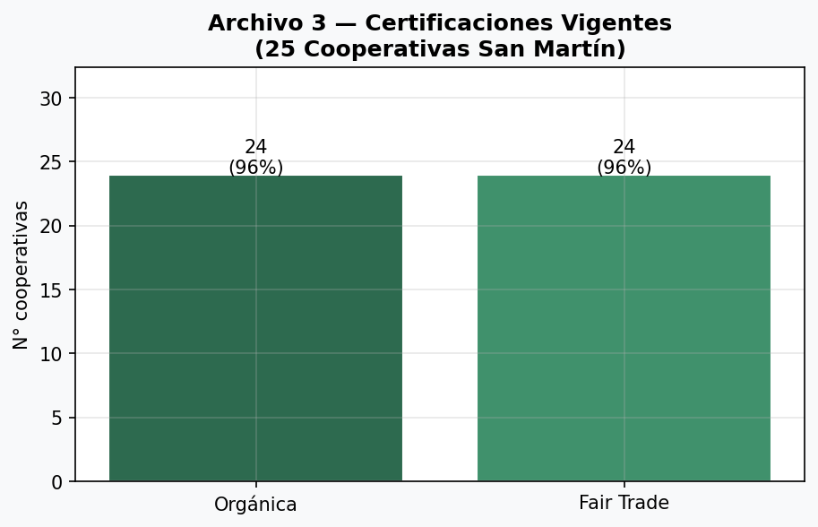
Orgânica y Fair Trade dominan. Rainforest Alliance no tiene dato estructurado.
Nivel de avance EUDR
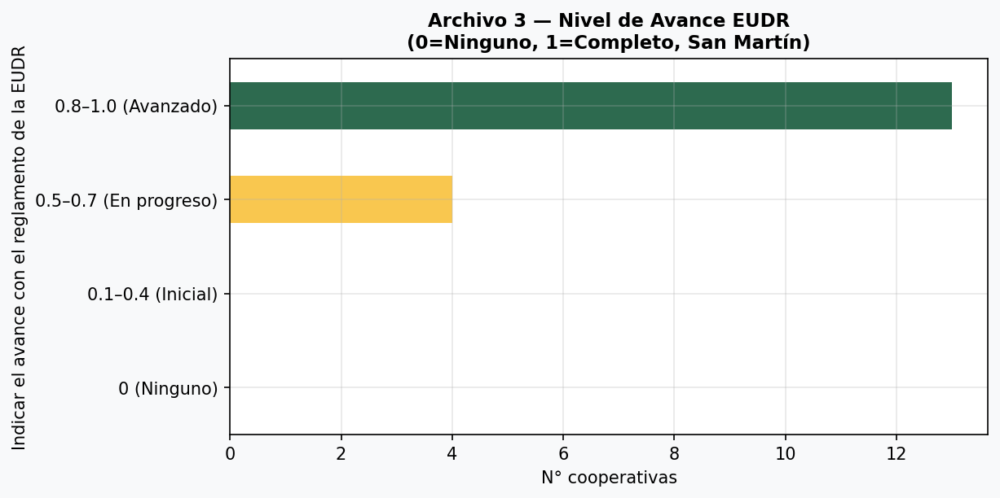
Mayorǐa de orgss. están en fase avanzada (0.75–1.0 de 1.0)
Exportaciones FOB 2025 por cooperativa (USD)
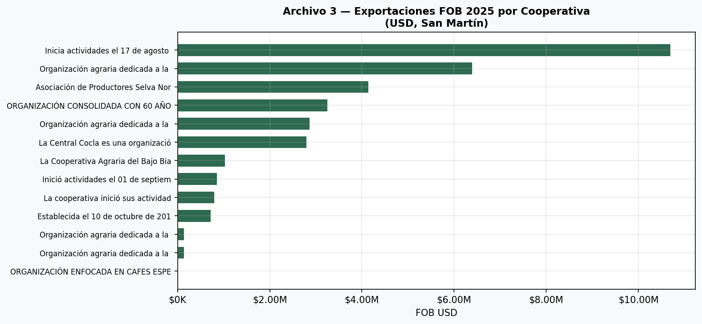
Concentración extrema: la cooperativa Valle Grande sola representa ~$10.7M de los $33.9M totales
Mercados de destino de exportación
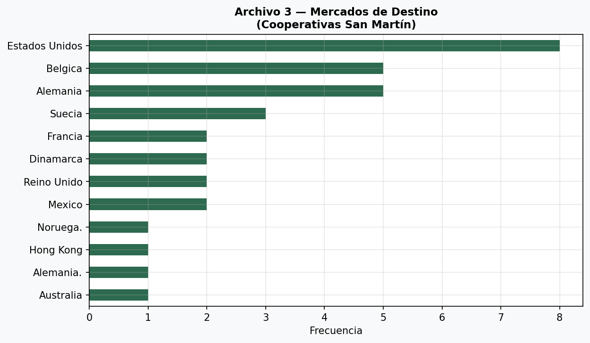
Estados Unidos es el principal mercado. Hay duplicación en nombres (p.ej. "Noruega." con punto) que debe limpiarse.
Calidad de Datos
| Archivo | Problema | Severidad | Acción recomendada |
|---|
| A1 | Columnas de ventas confundidas con beneficiarios por merged cells | 🔴 Alta | Reexportar Excel con estructura plana; auditar fórmulas originales |
| A1 | Celdas #REF! en fórmulas de ventas incrementales | 🟠 Media | Recalcular en Excel/LibreOffice o recomputar desde fuente |
| A1 | 96 categorías de producto — probable inconsistencias de nombres | 🟠 Media | Normalizar nombres (e.g., "CAFÉ" vs "café" vs "Cafe") |
| A3 | Columna Rainforest Alliance no encontrada — valor en texto libre | 🟠 Media | Extraer con regex del texto de "otras certificaciones" |
| A3 | 1 organización con estado SUSPENSIÓN TEMPORAL en SUNAT | 🔴 Alta | Verificar si es activo para el EUDR |
| A3 | Texto libre en certificaciones y calidad — no estructurado | 🟠 Media | Procesamiento NLP para extraer: n° certificado, fecha vigencia |
| A3 | 8 organizaciones sin registro de volumen de producción | 🟡 Baja | Completar con datos de campo |
| A3 | Duplicación de nombres de países ("Noruega." vs "Noruega") | 🟡 Baja | Limpiar strings en paso de ETL |
| A2 | Solo 6 registros — no representativo | 🟡 Baja | Ampliar directorio o marcar como piloto |
Hallazgos Clave
✅ Punto fuerte EUDR: Las 25 cooperativas de San Martín tienen un avance EUDR promedio de 0.79/1.0. 11 de las 17 organizaciones que registran dato están en fase avanzada (≥0.75). Esto indica que el universo de San Martín está relativamente bien posicionado para cumplir el reglamento.
🌍 Cobertura geográfica (A1)
- 25 departamentos cubiertos con 673 organizaciones PAC
- Cusco (66), Junín (57) y Puno (37) son los 3 departamentos con más organizaciones
- Huancavelica, Apurímac y Ayacucho también tienen representación significativa
- La concentración regional es consistente con las zonas cocaleras históricas
🏷️ Certificaciones (A3)
- 96% de las 25 cooperativas tienen certificación orgánica vigente
- 96% tienen Fair Trade
- Esto es un activo estratégico enorme para acceso al mercado UE bajo EUDR
- Rainforest Alliance no está estructurado — debe extraerse del texto libre
💰 Dimensión comercial (A3)
- 13 de 25 cooperativas exportan (52%)
- FOB 2025 total: $33.9M USD
- Concentración extrema: Valle Grande sola = $10.7M (31.5% del total)
- Mercados: EE.UU. (8 destinos), Bélgica y Alemania (5 c/u)
- Ninguna cooperativa apunta a China como mercado (a pesar de interés reportado)
⚠️ Flags EUDR (A3)
- 1 organización en suspensión temporal SUNAT — riesgo operativo
- 8 organizaciones sin volumen de producción declarado — incomplete perfil de riesgo
- Avance EUDR = 0 en 7 organizaciones (28% del universo)
- Marco normativo EUDR requiere trazabilidad completa — los gaps son críticos
EDA EUDR Cooperativas Café Perú · Proyecto eudrperu · Generado automáticamente por Mavis